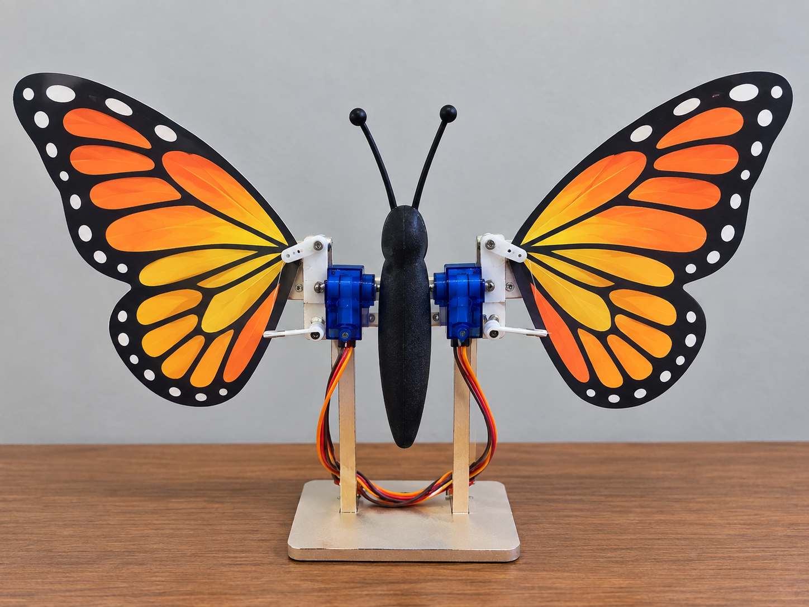
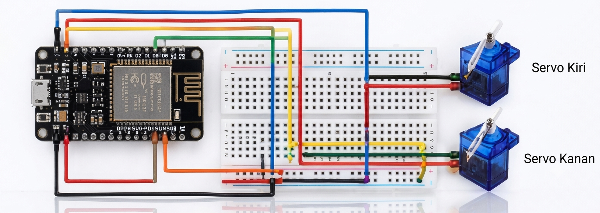

01
ESP32
Mikrokontroler utama yang digunakan untuk mengatur pergerakan kedua servo.
PROJECT DOKUMENTASI
Project sederhana menggunakan ESP32, dua servo motor, dan breadboard untuk membuat mekanisme sayap kupu-kupu yang dapat bergerak.

01 — PROJECT

Project ini adalah sebuah mekanisme kupu-kupu yang dibuat menggunakan ESP32 sebagai mikrokontroler utama.
Dua buah servo motor digunakan untuk menggerakkan bagian sayap kanan dan kiri. Kedua servo dikendalikan melalui program sehingga sayap dapat bergerak secara bersamaan.
Breadboard digunakan sebagai tempat untuk menghubungkan jalur listrik dan mempermudah pemasangan kabel tanpa harus melakukan penyolderan.
02 — MATERIAL
Mikrokontroler utama yang digunakan untuk mengatur pergerakan kedua servo.
Satu servo digunakan untuk menggerakkan sayap kanan dan satu servo untuk sayap kiri.
Digunakan sebagai media untuk menghubungkan ESP32 dengan servo.
Digunakan untuk menghubungkan pin ESP32, breadboard, dan servo.
Bagian mekanik yang bergerak mengikuti gerakan servo.
Digunakan untuk memberikan daya kepada ESP32 dan servo.
03 — WIRING

04 — PROCESS
Siapkan ESP32, dua servo motor, breadboard, kabel jumper, badan dan sayap kupu-kupu.
Letakkan ESP32 pada posisi yang aman dan mudah dihubungkan dengan breadboard.
Buat jalur positif dan ground pada breadboard untuk mempermudah koneksi.
Pasang servo kanan dan kiri pada mekanisme sayap kupu-kupu.
Hubungkan signal servo kanan ke GPIO 25 dan servo kiri ke GPIO 26.
Upload kode program ke ESP32 menggunakan Arduino IDE.
Nyalakan rangkaian dan periksa apakah kedua sayap bergerak sesuai program.
05 — CODE
Program digunakan untuk mengontrol dua servo. Servo bergerak dengan sudut berlawanan agar menghasilkan gerakan mengepak pada sayap.
#include <ESP32Servo.h>
Servo servoKanan;
Servo servoKiri;
const int pinServoKanan = 25;
const int pinServoKiri = 26;
void setup() {
servoKanan.attach(pinServoKanan);
servoKiri.attach(pinServoKiri);
servoKanan.write(90);
servoKiri.write(90);
delay(1000);
}
void loop() {
// Sayap bergerak ke atas
servoKanan.write(60);
servoKiri.write(120);
delay(300);
// Sayap bergerak ke bawah
servoKanan.write(120);
servoKiri.write(60);
delay(300);
}06 — RESULT
Setelah seluruh komponen terpasang dan program dijalankan, kedua servo akan bergerak sesuai perintah dari ESP32.
Gerakan servo kemudian diteruskan ke mekanisme sayap sehingga kupu-kupu dapat mengepakkan kedua sayapnya.